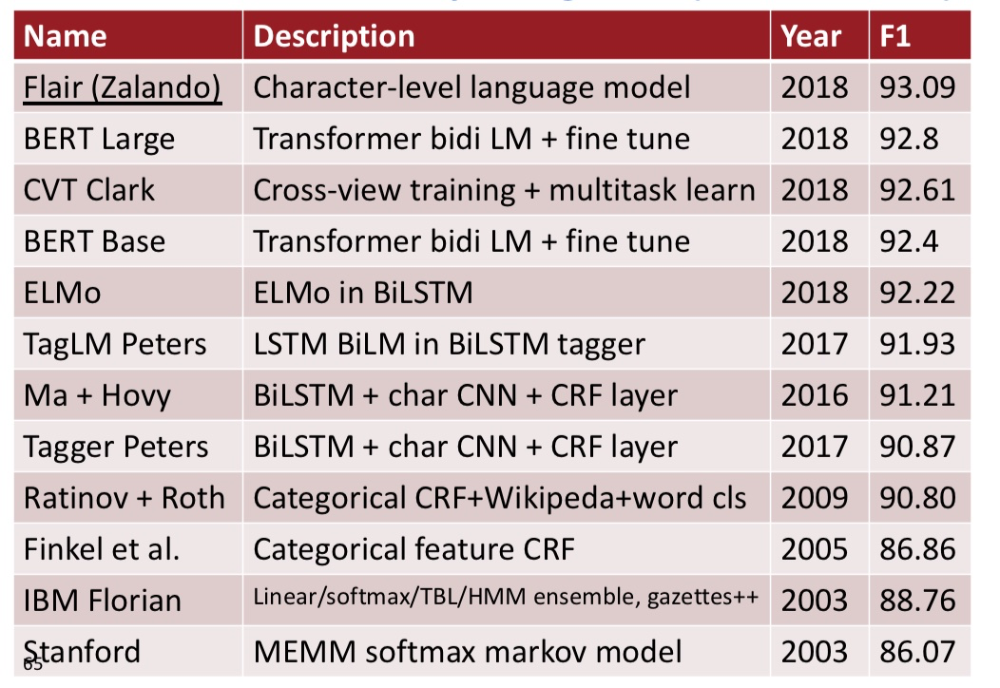
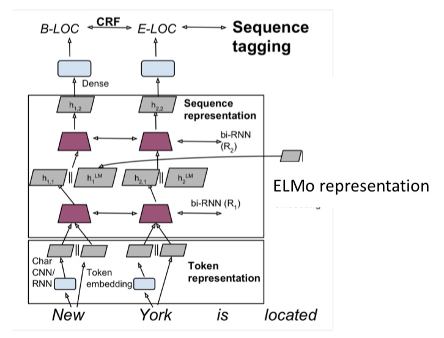
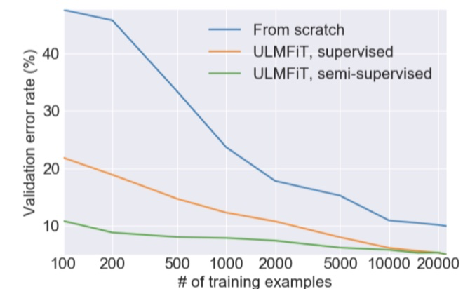
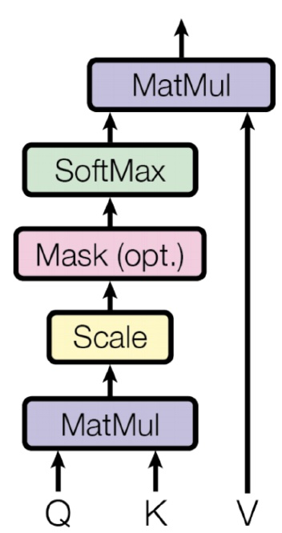
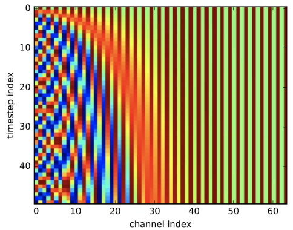
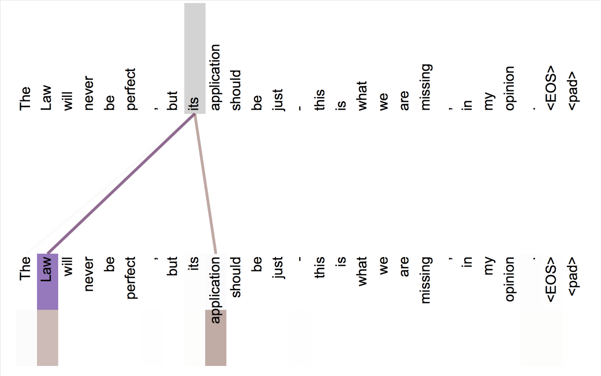
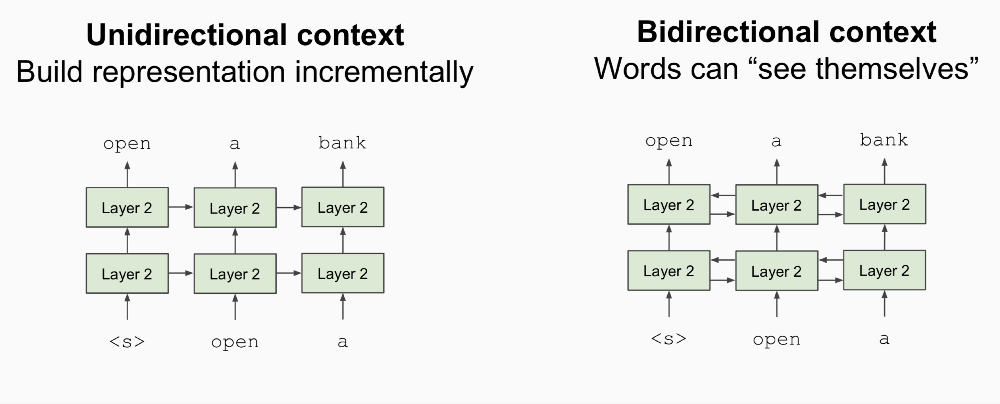

CS224n-2019 学习笔记¶
- 结合每课时的课件、笔记与推荐读物等整理而成
- 作业部分将单独整理
Lecture 13 Contextual Word Representations and Pretraining¶
Lecture Plan
- Reflections on word representations
- Pre-ELMo and ELMO
- ULMfit and onward
- Transformer architectures (20 mins)
- BERT
The remaining lectures
- Transformers
- BERT
- Question answering
- Text generation and summarization
- “New research, latest updates in the field”
- “Successful applications of NLP in industry today”
- “More neural architectures that are used to solve NLP problem”
- “More linguistics stuff and NLU!”
1. Representations for a word¶
现在我们可以获得一个单词的表示
- 我们开始时学过的单词向量 Word2vec, GloVe, fastText


Tips for unknown words with word vectors
- 简单且常见的解决方案
- 训练时：词汇表 Vocab 为 \{\text { words occurring, say, } \geq 5 \text { times }\} \cup\{<\cup N K>\}
- 将所有罕见的词（数据集中出现次数小于 5）都映射为 <\text{UNK}> ，为其训练一个词向量
- 运行时：使用 <\text{UNK}> 代替词汇表之外的词 OOV
- 问题
- 没有办法区分不同UNK话说,无论是身份还是意义
- 解决方案
- 使用字符级模型学习期词向量
- 特别是在 QA 中，match on word identity 是很重要的,即使词向量词汇表以外的单词
- Try these tips (from Dhingra, Liu, Salakhutdinov, Cohen 2017)
- 如果测试时的 <\text{UNK}> 单词不在你的词汇表中，但是出现在你使用的无监督词嵌入中，测试时直接使用这个向量
- 此外，你可以将其视为新的单词，并为其分配一个随机向量，将它们添加到你的词汇表。
- 使用字符级模型学习期词向量
- 帮助很大 或者 也许能帮点忙
- 你可以试试另一件事
- 将它们分解为词类（如未知号码，大写等等），每种都对应一个 <\text{UNK-class}>
Representations for a word
存在两个大问题
- 对于一个 word type 总是是用相同的表示，不考虑这个 word token 出现的上下文
- 比如 star 这个单词，有天文学上的含义以及娱乐圈中的含义
- 我们可以进行非常细粒度的词义消歧
- 我们对一个词只有一种表示，但是单词有不同的方面，包括语义，句法行为，以及表达 / 含义
- 表达：同样的意思可以是用多个单词表示，他们的词义是一样的
Did we all along have a solution to this problem?
- 在模型中，我们通过LSTM层(也许只在语料库上训练)
- 那些LSTM层被训练来预测下一个单词
- 但这些语言模型在每一个位置生成特定于上下文的词表示
2. Peters et al. (2017): TagLM – “Pre-ELMo”¶
https://arxiv.org/pdf/1705.00108.pdf
- 想法：想要获得单词在上下文的意思，但标准的 RNN 学习任务只在 task-labeled 的小数据上（如 NER ）
- 为什么不通过半监督学习的方式在大型无标签数据集上训练 NLM，而不只是词向量
Tag LM

- 与上文无关的单词嵌入 + RNN model 得到的 hidden states 作为特征输入

- Char CNN / RNN + Token Embedding 作为 bi-LSTM 的输入
- 得到的 hidden states 与 Pre-trained bi-LM（冻结的） 的 hidden states 连接起来输入到第二层的 bi-LSTM 中
Named Entity Recognition (NER)
- 一个非常重要的NLP子任务：查找和分类文本中的实体，例如

CoNLL 2003 Named Entity Recognition (en news testb)

Peters et al. (2017): TagLM – “Pre-ELMo”
语言模型在“Billion word benchmark”的8亿个训练单词上训练
语言模型观察结果
- 在监督数据集上训练的LM并不会受益
- 双向LM仅有助于 forward 过程，提升约0.2
- 具有巨大的 LM 设计（困惑度 30） 比较小的模型（困惑度 48）提升约0.3
任务特定的BiLSTM观察结果
- 仅使用LM嵌入来预测并不是很好：88.17 F1
- 远低于仅在标记数据上使用 BiLSTM 标记器
Also in the air: McCann et al. 2017: CoVe
https://arxiv.org/pdf/1708.00107.pdf
- 也有使用训练好的序列模型为其他NLP模型提供上下文的想法
- 想法：机器翻译是为了保存意思，所以这也许是个好目标？
- 使用seq2seq + attention NMT system中的Encoder，即 2层 bi-LSTM ，作为上下文提供者
- 所得到的 CoVe 向量在各种任务上都优于 GloVe 向量
- 但是，结果并不像其他幻灯片中描述的更简单的NLM培训那么好，所以似乎被放弃了
- 也许NMT只是比语言建模更难？
- 或许有一天这个想法会回来？
Peters et al. (2018): ELMo: Embeddings from Language Models
Deep contextualized word representations. NAACL 2018. https://arxiv.org/abs/1802.05365
- word token vectors or contextual word vectors 的爆发版本
- 使用长上下文而不是上下文窗口学习 word token 向量(这里，整个句子可能更长)
- 学习深度Bi-NLM，并在预测中使用它的所有层
- 训练一个双向LM
- 目标是 performant 但LM不要太大
- 使用2个biLSTM层
- (仅)使用字符CNN构建初始单词表示
- 2048 个 char n-gram filters 和 2 个 highway layers，512 维的 projection
- 4096 dim hidden/cell LSTM状态，使用 512 dim的对下一个输入的投影
- 使用残差连接
- 绑定 token 的输入和输出的参数(softmax)，并将这些参数绑定到正向和反向LMs之间
- ELMo学习biLM表示的特定任务组合
- 这是一个创新，TagLM 中仅仅使用堆叠LSTM的顶层，ELMo 认为BiLSTM所有层都是有用的
- \gamma^{t a s k} 衡量ELMo对任务的总体有用性，是为特定任务学习的全局比例因子
- \mathbf{s}^{t a s k} 是 softmax 归一化的混合模型权重，是 BiLSTM 的加权平均值的权重，对不同的任务是不同的，因为不同的任务对不同层的 BiLSTM 的
Peters et al. (2018): ELMo: Use with a task
- 首先运行 biLM 获取每个单词的表示
- 然后让(无论什么)最终任务模型使用它们
- 冻结ELMo的权重，用于监督模型
- 将ELMo权重连接到特定于任务的模型中
- 细节取决于任务
- 像 TagLM 一样连接到中间层是典型的
- 可以在生产输出时提供更多的表示，例如在问答系统中
- 细节取决于任务
ELMo used in a sequence tagger

ELMo results: Great for all tasks

ELMo: Weighting of layers
- 这两个biLSTM NLM层有不同的用途/含义
- 低层更适合低级语法，例如
- 词性标注(part-of-speech tagging)、句法依赖(syntacticdependency)、NER
- 高层更适合更高级别的语义
- 情绪、Semantic role labeling 语义角色标记 、question answering、SNLI
- 低层更适合低级语法，例如
- 这似乎很有趣，但它是如何通过两层以上的网络来实现的看起来更有趣
Also around: ULMfit
Howard and Ruder (2018) Universal Language Model Fine-tuning for Text Classification. https://arxiv.org/pdf/1801.06146.pdf
- 转移NLM知识的一般思路是一样的
- 这里应用于文本分类

3. ULMfit¶
- 在大型通用领域的无监督语料库上使用 biLM 训练
- 在目标任务数据上调整 LM
- 对特定任务将分类器进行微调

ULMfit emphases
- 使用合理大小的“1 GPU”语言模型，并不是真的很大
- 在LM调优中要注意很多
- 不同的每层学习速度
- 倾斜三角形学习率(STLR)计划
- 学习分类器时逐步分层解冻和STLR
- 使用\left[h_{T}, \operatorname{maxpool}(\mathbf{h}), \operatorname{meanpool}(\mathbf{h})\right]进行分类
- 使用大型的预训练语言模型是一种提高性能的非常有效的方法
ULMfit performance
- 文本分类器错误率

ULMfit transfer learning

- 如果使用监督数据进行训练文本分类器，需要大量的数据才能学习好

GPT-2 language model (cherry-picked) output
- 文本生成的样例


- Transformer 不仅狠强大，而且允许扩展到更大的尺寸
4. The Motivation for Transformers¶

- 我们想要并行化，但是RNNs本质上是顺序的
- 尽管有GRUs和LSTMs, RNNs仍然需要注意机制来处理长期依赖关系——否则状态之间的 path length 路径长度 会随着序列增长
- 但如果注意力让我们进入任何一个状态……也许我们可以只用注意力而不需要RNN?
Transformer Overview
Attention is all you need. 2017. Aswani, Shazeer, Parmar, Uszkoreit, Jones, Gomez, Kaiser, Polosukhin https://arxiv.org/pdf/1706.03762.pdf
- Non-recurrent sequence-to-sequence encoder-decoder model
- 任务：平行语料库的机器翻译
- 预测每个翻译单词
- 最终成本/误差函数是 softmax 分类器基础上的标准交叉熵误差
Transformer Basics
- 自学
- 主要推荐资源
- http://nlp.seas.harvard.edu/2018/04/03/attention.html
- The Annotated Transformer by Sasha Rush
- An Jupyter Notebook using PyTorch that explains everything!
- 主要推荐资源
- 现在：我们定义 Transformer 网络的基本构建块：第一，新的注意力层
Dot-Product Attention (Extending our previous def.)
- 输入：对于一个输出而言的查询 q 和一组键-值对 k-v
- Query, keys, values, and output 都是向量
- 输出值的加权和
- 权重的每个值是由查询和相关键的内积计算结果
- Query 和 keys 有相同维数 d_k ，value 的维数为 d_v
Dot-Product Attention – Matrix notation
- 当我们有多个查询 q 时，我们将它们叠加在一个矩阵 Q 中

Scaled Dot-Product Attention

- 问题：d_k 变大时，q^Tk 的方差增大 \to 一些 softmax 中的值的方差将会变大 \to softmax 得到的是峰值 \to 因此梯度变小了
- 解决方案：通过query/key向量的长度进行缩放
Self-attention in the encoder
- 输入单词向量是queries, keys and values
- 换句话说：这个词向量自己选择彼此
- 词向量堆栈= Q = K = V
- 我们会通过解码器明白为什么我们在定义中将他们分开
Multi-head attention

- 简单self-attention的问题
- 单词只有一种相互交互的方式
- 解决方案：多头注意力
- 首先通过矩阵 W 将 Q, K, V 映射到 h = 8 的许多低维空间
- 然后应用注意力，然后连接输出，通过线性层
Complete transformer block

- 每个 block 都有两个“子层”
- 多头 attention
- 两层的前馈神经网络，使用 ReLU
这两个子层都：
- 残差连接以及层归一化
- LayerNorm(x+Sublayer(x))
- 层归一化将输入转化为均值是 0，方差是 1 ，每一层和每一个训练点（并且添加了两个参数）
Layer Normalization by Ba, Kiros and Hinton, https://arxiv.org/pdf/1607.06450.pdf
Encoder Input

- 实际的词表示是 byte-pair 编码
- 还添加了一个 positional encoding 位置编码，相同的词语在不同的位置有不同的整体表征
Complete Encoder

- encoder 中，每个 block 都是来自前一层的 Q, K, V
- Blocks 被重复 6 次（垂直方向）
- 在每个阶段，你可以通过多头注意力看到句子中的各个地方，累积信息并将其推送到下一层。在任一方向上的序列逐步推送信息来计算感兴趣的值
- 非常善于学习语言结构
Attention visualization in layer 5
- 词语开始以合理的方式关注其他词语

- 不同的颜色对应不同的注意力头
Attention visualization: Implicit anaphora resolution

- 对于代词，注意力头学会了如何找到其指代物
- 在第五层中，从 head 5 和 6 的单词“its”中分离出来的注意力。请注意，这个词的注意力是非常鲜明的。
Transformer Decoder

- decoder 中有两个稍加改变的子层
- 对之前生成的输出进行 Masked decoder self-attention

- Encoder-Decoder Attention，queries 来自于前一个 decoder 层，keys 和 values 来自于 encoder 的输出
- Blocks 同样重复 6 次
Tips and tricks of the Transformer
细节(论文/讲座)
- Byte-pair encodings
- Checkpoint averaging
- Adam 优化器控制学习速率变化
- 训练时，在每一层添加残差之前进行 Dropout
- 标签平滑
- 带有束搜索和长度惩罚的 Auto-regressive decoding
- 因为 transformer 正在蔓延，但他们很难优化并且不像LSTMs那样开箱即用，他们还不能很好与其他任务的构件共同工作
Experimental Results for MT

Experimental Results for Parsing

5. BERT: Devlin, Chang, Lee, Toutanova (2018)¶
BERT (Bidirectional Encoder Representations from Transformers):
Pre-training of Deep Bidirectional Transformers for Language Understanding
- 问题：语言模型只使用左上下文或右上下文，但语言理解是双向的
- 为什么LMs是单向的？
- 原因1：方向性对于生成格式良好的概率分布是有必要的
- 我们不在乎这个
- 原因2：双向编码器中单词可以“看到自己”

- 解决方案：mask out k % 的输入单词，然后预测 masked words
- 不再是传统的计算生成句子的概率的语言模型，目标是填空
- 总是使用k = 15%

- Masking 太少：训练太昂贵
- Masking 太多：没有足够的上下文

- GPT 是经典的单项的语言模型
- ELMo 是双向的，但是两个模型是完全独立训练的，只是将输出连接在一起，并没有使用双向的 context
- BERT 使用 mask 的方式进行整个上下文的预测，使用了双向的上下文信息
BERT complication: Next sentence prediction
- 学习句子之间的关系，判断句子 B 是句子 A 的后一个句子还是一个随机的句子。

BERT sentence pair encoding

- token embeddings 是 word pieces （\text{paly}, \text{##ing}）
- 使用学习好的分段嵌入表示每个句子
- 位置嵌入与其他 Transformer 体系结构类似
- 将以上三种 embedding 相加，作为最终输入的表示
BERT model architecture and training
- Transformer encoder（和之前的一样）
- 自注意力 \to 没有位置偏差
- 长距离上下文“机会均等”
- 每层乘法 ⇒ GPU / TPU上高效
- 在 Wikipedia + BookCorpus 上训练
- 训练两种模型尺寸
- BERT-Base: 12-layer, 768-hidden, 12-head
- BERT-Large: 24-layer, 1024-hidden, 16-head
- Trained on 4x4 or 8x8 TPU slice for 4 days
BERT model fine tuning
- 只学习一个建立在顶层的分类器，微调的每个任务

BERT results on GLUE tasks
-
GLUE benchmark 是由自然语言推理任务,还有句子相似度和情感
-
MultiNLI
-
Premise: Hills and mountains are especially sanctified in Jainism.
Hypothesis: Jainism hates nature.
Label: Contradiction
-
CoLa
-
Sentence: The wagon rumbled down the road. Label: Acceptable
-
Sentence: The car honked down the road. Label: Unacceptable

BERT results on SQuAD 1.1

SQuAD 2.0 leaderboard, 2019-02-07

Effect of pre-training task

Size matters
- 从 119M 到 340M 的参数量改善了很多
- 改进尚未渐进
Suggested Readings¶
The Annotated Transformer 代码解析
jalammar 的一系列可视化简单教程
Visualizing A Neural Machine Translation Model (Mechanics of Seq2seq Models With Attention)
The Illustrated BERT, ELMo, and co. (How NLP Cracked Transfer Learning)
Reference¶
以下是学习本课程时的可用参考书籍：
《基于深度学习的自然语言处理》 （车万翔老师等翻译）
以下是整理笔记的过程中参考的博客：
斯坦福CS224N深度学习自然语言处理2019冬学习笔记目录 (课件核心内容的提炼，并包含作者的见解与建议)
斯坦福大学 CS224n自然语言处理与深度学习笔记汇总 这是针对note部分的翻译